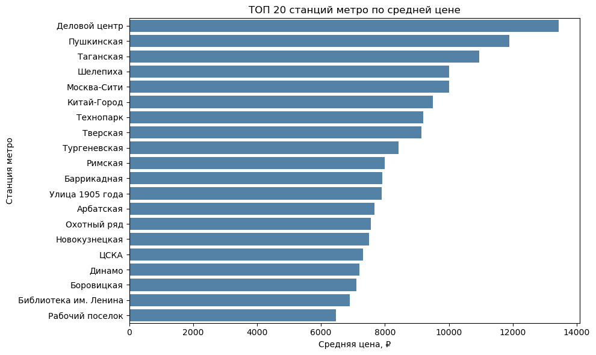
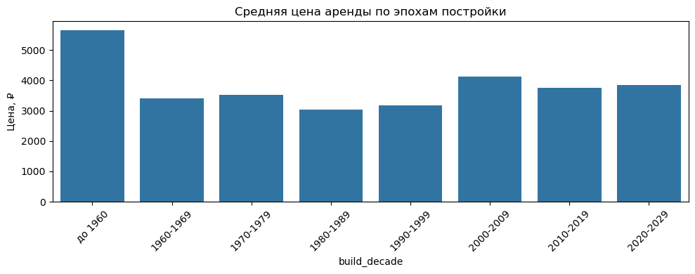
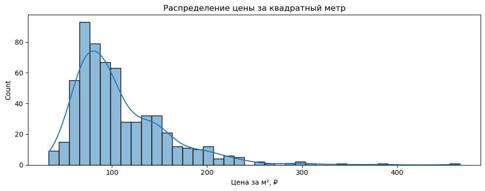

Ко мне обратился частный клиент, практикующий специалист в сфере недвижимости. Его интересовало, как именно формируется стоимость посуточной аренды в Москве: какие факторы реально влияют на цену, насколько рынок однороден и можно ли заранее распознать переоценённые или выгодные объекты.
Проект носил исследовательский характер — цель заключалась в формировании собственной системы оценки, основанной на данных, а не на догадках или рыночных стереотипах. Я предложил реализовать полный аналитический цикл: от автоматического сбора данных до создания дашборда, где можно самостоятельно исследовать закономерности и выявлять нетипичные случаи.
Проект потребовал комплексного подхода к работе с данными — от автоматизированного сбора до глубокого анализа:
Проект показал, насколько мощным может быть даже базовый анализ данных при грамотной постановке задач. Было обработано более 1000 объектов. В результате:
Цены аренды тесно связаны с метро и улицей. В топе — Деловой центр, Пушкинская, Таганская, а также исторические локации типа Арбата и Котельнической набережной.

Топ-20 станций метро по средней цене аренды с аннотациями
чётко прослеживается тренд: старые дома (до 1960 г.) и новостройки 2000-х — самые дорогие. Самые дешёвые — панельные дома 1980-х годов. Это важно при массовой оценке и фильтрации объектов.

Средняя цена аренды по эпохам постройки с медианой и доверительными интервалами
Анализ стоимости за квадратный метр помог выявить необычные объекты. Например, рекордная цена — 466 ₽/м² при площади 15 м² и цене 6990 ₽/сутки. Этот объект расположен рядом с метро Деловой центр, что могло повлиять на его стоимость. В среднем цена за метр составляет около 108 ₽/м², а медианная — 94 ₽/м².

Распределение цены за м²
Найдены лофты с потолками 4,5 м, квартиры с нереалистично высокой ценой при плохих характеристиках, случаи с некорректно заполненными карточками. Эти объекты были полезны клиенту как тревожные сигналы при ручном выборе или разработке фильтров.
Корреляционный анализ показал, что такие признаки как этаж, количество подъездов или даже тип дома оказывают минимальное влияние. Это позволило клиенту сократить перечень фичей, которые он учитывал при экспертной оценке.
Полный цикл занял около 1 недели:
Проект полностью реализован собственными силами с использованием современных инструментов анализа данных.
Данные не лгут — если правильно с ними работать. Обсудим ваш проект с реальными выводами
СВЯЗАТЬСЯ СО МНОЙ